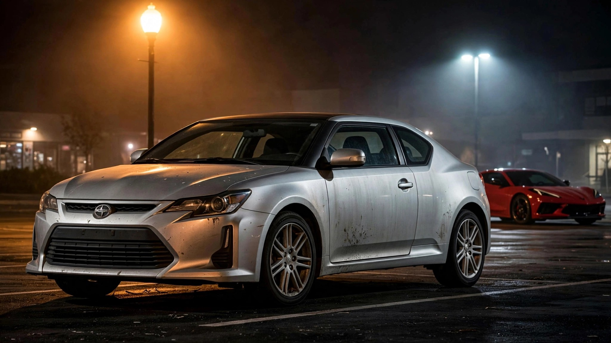

Toyota Built a Sports Car for First-Time Buyers. It Kills at a Higher Rate Than the Corvette.

In 2003, Toyota launched Scion with a single directive: sell cars to people under 25. Scion's tC coupe was the flagship. Two doors, 180 horsepower, a manual transmission option, and a sticker price that started under $19,000. It was a sports car for the driver's license generation. Between 2004 and 2016, Toyota sold roughly 600,000 of them. Then Scion folded, and the brand vanished from showrooms.
It did not vanish from morgues. FARS data covering 2014 through 2023 records 242 fatalities involving the Scion tC at a rate of 2.30 per 100 million vehicle miles traveled.[1] That figure places the tC ahead of every Porsche, every Nissan Z, every Dodge Challenger, and directly above the Chevrolet Corvette.
The Corvette comparison is the one that stings. Chevrolet's mid-engine flagship weighs 200 pounds more, produces 455 horsepower in base trim, and costs north of $65,000. Its FARS fatality rate is 1.52 per 100 million VMT. With half the power and a third of the price, the tC kills at a 51% higher rate per mile driven. A budget coupe marketed to teenagers outpaces a car specifically engineered for track-adjacent speed.
Impairment data scrambles the obvious explanation. Among 894 tC drivers recorded in FARS fatal crashes, 21.9% tested positive for alcohol or drugs.[1] Among 1,147 Corvette drivers in the same dataset, 26.2% tested positive. Corvette drivers are meaningfully more impaired, yet the car kills at a meaningfully lower rate. Strip impairment from the calculation entirely and the gap widens: the tC's sober-adjusted fatality rate is 1.80, compared with the Corvette's 1.12. Sober tC drivers die at 1.6 times the Corvette's sober rate.
Model year data reveals where the damage concentrated. The 2007 tC accounts for the peak at 48 deaths, followed by 2006 (39) and 2005 (33).[1] First-generation cars, now 19 to 22 years old, produced the bulk of the body count. Their current owners are overwhelmingly second- or third-hand buyers who purchased the cheapest available coupe. Depreciation funneled the tC downmarket to drivers with fewer resources for maintenance, insurance, and repairs.
Among affordable cars commonly bought as first vehicles, the tC ranks third in death rate behind the Chevrolet Cobalt (5.10) and Ford Focus (2.52), edging out the Honda Civic (2.25) and easily clearing the Toyota Corolla (1.85).[1] Scion designed the tC to sit between the Corolla and a proper sports car. In practice, it sits between the Civic and a coffin with alloy wheels.
Toyota will not face recalls over this. No component is defective. No system malfunctioned. The tC was simply a lightweight, affordable, sporty car sold to the demographic least equipped to survive in one, and nobody tracked that combination until the body count matured in the FARS archive. A fair objection: the tC's 131,250 estimated fleet produces wider error bars than the Corvette's 262,500, and VMT estimates for a low-volume discontinued coupe carry more uncertainty than for a mass-market sedan. Shift the tC's rate down to 2.0 and the Corvette gap narrows. It does not close.
If someone you know drives a first-generation Scion tC, the data supports one recommendation: replace it. The 2018-or-later Corolla has a fraction of the fatality rate, standard AEB, and comparable insurance costs. Run the VIN at nhtsa.gov/recalls for any open recall work before selling it. Its biggest safety feature at this point is resale value low enough that walking away is painless.
Sources & References
- NHTSA, Fatality Analysis Reporting System (FARS), 2014–2023. Death rates, impairment, and model-year breakdowns derived from FARS bulk data. nhtsa.gov
- IIHS, Fatality Statistics: Passenger Vehicle Occupants. iihs.org
- NHTSA, Vehicle Recalls Database. nhtsa.gov/recalls